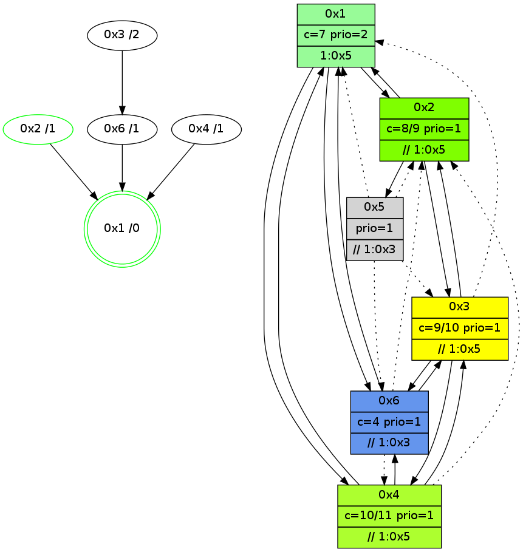

>> << IDX [start] -100 -25 -5 +0 +5 +25 +100 [920.39192605]
 Previous packets
915.008694 beacon03(adaf) #0 coord=01,02,05,03,04,06 cycle=432.0ms assoc 64 44 44
915.018694 beacon04(adaf) #0 coord=01,02,05,03,04,06 cycle=432.0ms assoc 64 e2 6e
915.028694 beacon06(adaf) #0 coord=01,02,05,03,04,06 cycle=432.0ms assoc 64 96 72
915.040233 [STC(4)->1 #0.112 to-color d=1]
915.044294 [Hello(6): seq=633 sym=2,1,3 asym=4 sysInfo=hasWarning stat=2:11,13,4,1/1:15,13,11,1/3:15,1,4,1/4:0,2,0,0]
915.046646 [Color(2) seq=118 @0:0 color=8/9 prio=1 >>1.@5 c=4,7,9;0,1,2,5,6,a]
915.048146 [STC(6)->1 #0.112 new-neigh,tree-change,inconsistent-stability,to-color d=1]
915.049454 [Color(1) seq=146 @0:0 color=7 prio=2 >1.@5 c=1,4,6,8,9;0,2,3,5,a]
915.056752 [STC(3)->1 #0.112 new-neigh,tree-change,inconsistent-stability,stable,to-color d=1]
915.059032 [Color(3) seq=104 @0:0 color=9/10 prio=1 >>1.@5 c=4,7,8,a;0,1,2,5,6]
----------------------------------------------------------------------
915.470843 beacon01(adaf) #0 coord=01,02,05,03,04,06 cycle=432.0ms assoc
-- color-indic=1 64 0a 88
915.480806 beacon02(adaf) #0 coord=01,02,05,03,04,06 cycle=432.0ms assoc 64 5b 77
915.490803 beacon05(adaf) #0 coord=01,02,05,03,04,06 cycle=432.0ms assoc 64 fd 5d
915.500806 beacon03(adaf) #0 coord=01,02,05,03,04,06 cycle=432.0ms assoc 64 61 79
915.510804 beacon04(adaf) #0 coord=01,02,05,03,04,06 cycle=432.0ms assoc 64 c7 53
915.520806 beacon06(adaf) #0 coord=01,02,05,03,04,06 cycle=432.0ms assoc 64 b3 4f
915.532530 [Hello(4): seq=721 sym=1,6,3 asym=2 sysInfo=hasWarning stat=1:14,7,14,0/6:0,0,1,0/3:13,0,7,4/2:0,3,1,0]
915.537209 [Hello(1): seq=620 sym=2,4,6 sysInfo=hasWarning,coloring-mode-on,ColoringModeRequestCalled stat=2:1,14,6,2/4:0,0,0,0/6:3,0,3,1]
----------------------------------------------------------------------
915.962952 beacon01(adaf) #0 coord=01,02,05,03,04,06 cycle=432.0ms assoc
-- color-indic=1 64 ce e7
915.972913 beacon02(adaf) #0 coord=01,02,05,03,04,06 cycle=432.0ms assoc 64 9f 18
915.982913 beacon05(adaf) #0 coord=01,02,05,03,04,06 cycle=432.0ms assoc 64 39 32
915.992915 beacon03(adaf) #0 coord=01,02,05,03,04,06 cycle=432.0ms assoc 64 a5 16
916.002913 beacon04(adaf) #0 coord=01,02,05,03,04,06 cycle=432.0ms assoc 64 03 3c
916.012914 beacon06(adaf) #0 coord=01,02,05,03,04,06 cycle=432.0ms assoc 64 77 20
916.024652 [Hello(6): seq=634 sym=2,1,3 asym=4 sysInfo=hasWarning stat=2:11,13,4,1/1:0,14,11,1/3:15,2,5,1/4:0,2,0,0]
916.026684 [Color(1) seq=147 @0:0 color=7 prio=2 >1.@5 c=1,4,6,8,9;0,2,3,5,a]
916.029022 [Color(2) seq=119 @0:0 color=8/9 prio=1 >>1.@5 c=4,7,9;0,1,2,5,6,a]
916.031053 [Hello(3): seq=719 sym=6,4,1,2 sysInfo=hasWarning stat=6:3,11,10,2/4:1,3,1,0/1:14,14,6,1/2:8,6,5,1]
916.034839 [Color(3) seq=105 @0:0 color=9/10 prio=1 >>1.@5 c=4,7,8,a;0,1,2,5,6]
----------------------------------------------------------------------
916.455061 beacon01(adaf) #0 coord=01,02,05,03,04,06 cycle=432.0ms assoc
-- color-indic=1 64 82 57
916.465022 beacon02(adaf) #0 coord=01,02,05,03,04,06 cycle=432.0ms assoc 64 d3 a8
916.475022 beacon05(adaf) #0 coord=01,02,05,03,04,06 cycle=432.0ms assoc 64 75 82
916.485022 beacon03(adaf) #0 coord=01,02,05,03,04,06 cycle=432.0ms assoc 64 e9 a6
916.495022 beacon04(adaf) #0 coord=01,02,05,03,04,06 cycle=432.0ms assoc 64 4f 8c
916.505023 beacon06(adaf) #0 coord=01,02,05,03,04,06 cycle=432.0ms assoc 64 3b 90
916.515880 [Hello(1): seq=621 sym=2,4,6 sysInfo=hasWarning,coloring-mode-on,ColoringModeRequestCalled stat=2:1,15,6,2/4:0,0,0,0/6:3,0,3,1]
916.520392 [Hello(4): seq=722 sym=1,6,3 asym=2 sysInfo=hasWarning stat=1:15,8,14,0/6:1,0,1,0/3:14,1,7,4/2:0,4,1,0]
----------------------------------------------------------------------
916.947170 beacon01(adaf) #0 coord=01,02,05,03,04,06 cycle=432.0ms assoc
-- color-indic=1 64 46 38
916.957131 beacon02(adaf) #0 coord=01,02,05,03,04,06 cycle=432.0ms assoc 64 17 c7
916.967131 beacon05(adaf) #0 coord=01,02,05,03,04,06 cycle=432.0ms assoc 64 b1 ed
916.977130 beacon03(adaf) #0 coord=01,02,05,03,04,06 cycle=432.0ms assoc 64 2d c9
916.987132 beacon04(adaf) #0 coord=01,02,05,03,04,06 cycle=432.0ms assoc 64 8b e3
916.997132 beacon06(adaf) #0 coord=01,02,05,03,04,06 cycle=432.0ms assoc 64 ff ff
917.008906 [Hello(6): seq=635 sym=1,3 asym=4,2 sysInfo=hasWarning stat=1:1,15,11,1/3:0,3,5,1/4:0,2,0,0/2:12,14,4,1]
917.011643 [Hello(3): seq=720 sym=6,4,2 asym=1 sysInfo=hasWarning stat=6:4,11,10,2/4:2,3,1,0/2:8,6,5,1/1:15,14,6,1]
917.014843 [Color(3) seq=106 @0:0 color=9/10 prio=1 >>1.@5 c=4,7,8,a;0,1,2,5,6]
917.018593 [Color(2) seq=120 @0:0 color=8/9 prio=1 >>1.@5 c=4,7,9;0,1,2,5,6,a]
917.021520 [STC(1) #0.113 new-neigh,tree-change,inconsistent-stability,stable,to-color d=0]
917.023152 [Color(1) seq=148 @0:0 color=7 prio=2 >1.@5 c=1,4,6,8,9;0,2,3,5,a]
----------------------------------------------------------------------
917.439277 beacon01(adaf) #0 coord=01,02,05,03,04,06 cycle=432.0ms assoc
-- color-indic=1 64 0b 3f
917.449237 beacon02(adaf) #0 coord=01,02,05,03,04,06 cycle=432.0ms assoc 64 5a c0
917.459238 beacon05(adaf) #0 coord=01,02,05,03,04,06 cycle=432.0ms assoc 64 fc ea
917.469238 beacon03(adaf) #0 coord=01,02,05,03,04,06 cycle=432.0ms assoc 64 60 ce
917.479238 beacon04(adaf) #0 coord=01,02,05,03,04,06 cycle=432.0ms assoc 64 c6 e4
917.489239 beacon06(adaf) #0 coord=01,02,05,03,04,06 cycle=432.0ms assoc 64 b2 f8
917.500761 [STC(6)->1 #0.113 new-neigh,tree-change,inconsistent-stability,to-color d=1]
917.502026 [Hello(1): seq=622 sym=2,4,6 sysInfo=hasWarning,coloring-mode-on,ColoringModeRequestCalled stat=2:2,15,6,2/4:0,0,0,0/6:4,0,3,1]
917.504816 [Hello(4): seq=723 sym=1,6,3 asym=2 sysInfo=hasWarning stat=1:15,9,15,0/6:2,0,1,0/3:15,2,7,4/2:0,5,1,0]
917.508408 [STC(2)->1 #0.113 new-neigh,tree-change,inconsistent-stability,stable,to-color d=1]
917.512322 [STC(4)->1 #0.113 new-neigh,tree-change,inconsistent-stability,to-color d=1]
----------------------------------------------------------------------
917.931386 beacon01(adaf) #0 coord=01,02,05,03,04,06 cycle=432.0ms assoc
-- color-indic=1 64 cf 50
917.941348 beacon02(adaf) #0 coord=01,02,05,03,04,06 cycle=432.0ms assoc 64 9e af
917.951347 beacon05(adaf) #0 coord=01,02,05,03,04,06 cycle=432.0ms assoc 64 38 85
917.961348 beacon03(adaf) #0 coord=01,02,05,03,04,06 cycle=432.0ms assoc 64 a4 a1
917.971349 beacon04(adaf) #0 coord=01,02,05,03,04,06 cycle=432.0ms assoc 64 02 8b
917.981349 beacon06(adaf) #0 coord=01,02,05,03,04,06 cycle=432.0ms assoc 64 76 97
917.993069 [Hello(6): seq=636 sym=1,3 asym=4,2 sysInfo=hasWarning stat=1:2,0,12,1/3:1,4,5,1/4:0,2,1,0/2:13,15,5,1]
917.995565 [Color(1) seq=149 @0:0 color=7 prio=2 >1.@5 c=1,4,6,8,9;0,2,3,5,a]
917.997458 [Color(2) seq=121 @0:0 color=8/9 prio=1 >>1.@5 c=4,7,9;0,1,2,5,6,a]
918.002327 [Hello(3): seq=721 sym=6,4,2 asym=1 sysInfo=hasWarning stat=6:5,11,11,2/4:2,3,2,0/2:8,7,6,1/1:0,15,7,1]
918.005213 [STC(3)->6-.->1 #0.113 to-color d=2]
----------------------------------------------------------------------
918.423495 beacon01(adaf) #0 coord=01,02,05,03,04,06 cycle=432.0ms assoc
-- color-indic=1 64 83 e0
918.433459 beacon02(adaf) #0 coord=01,02,05,03,04,06 cycle=432.0ms assoc 64 d2 1f
918.443456 beacon05(adaf) #0 coord=01,02,05,03,04,06 cycle=432.0ms assoc 64 74 35
918.453456 beacon03(adaf) #0 coord=01,02,05,03,04,06 cycle=432.0ms assoc 64 e8 11
918.463458 beacon04(adaf) #0 coord=01,02,05,03,04,06 cycle=432.0ms assoc 64 4e 3b
918.473457 beacon06(adaf) #0 coord=01,02,05,03,04,06 cycle=432.0ms assoc 64 3a 27
918.484320 [Hello(1): seq=623 sym=2,4,6 sysInfo=hasWarning,coloring-mode-on,ColoringModeRequestCalled stat=2:3,0,7,2/4:0,0,1,0/6:4,0,3,1]
918.488840 [Hello(4): seq=724 sym=1,6,3 asym=2 sysInfo=hasWarning stat=1:15,10,15,0/6:3,0,1,0/3:15,2,8,4/2:0,6,1,0]
----------------------------------------------------------------------
918.915603 beacon01(adaf) #0 coord=01,02,05,03,04,06 cycle=432.0ms assoc
-- color-indic=1 64 47 8f
918.925566 beacon02(adaf) #0 coord=01,02,05,03,04,06 cycle=432.0ms assoc 64 16 70
918.935566 beacon05(adaf) #0 coord=01,02,05,03,04,06 cycle=432.0ms assoc 64 b0 5a
918.945565 beacon03(adaf) #0 coord=01,02,05,03,04,06 cycle=432.0ms assoc 64 2c 7e
918.955565 beacon04(adaf) #0 coord=01,02,05,03,04,06 cycle=432.0ms assoc 64 8a 54
918.965567 beacon06(adaf) #0 coord=01,02,05,03,04,06 cycle=432.0ms assoc 64 fe 48
918.977297 [Hello(3): seq=722 sym=6,4,2 asym=1 sysInfo=hasWarning stat=6:5,11,11,2/4:2,3,2,0/2:8,7,6,1/1:1,15,7,1]
918.986970 [Color(1) seq=150 @0:0 color=7 prio=2 >1.@5 c=1,4,6,8,9;0,2,3,5,a]
----------------------------------------------------------------------
919.407711 beacon01(adaf) #0 coord=01,02,05,03,04,06 cycle=432.0ms assoc
-- color-indic=1 64 19 ee
919.417672 beacon02(adaf) #0 coord=01,02,05,03,04,06 cycle=432.0ms assoc 64 48 11
919.427672 beacon05(adaf) #0 coord=01,02,05,03,04,06 cycle=432.0ms assoc 64 ee 3b
919.437672 beacon03(adaf) #0 coord=01,02,05,03,04,06 cycle=432.0ms assoc 64 72 1f
919.447673 beacon04(adaf) #0 coord=01,02,05,03,04,06 cycle=432.0ms assoc 64 d4 35
919.457675 beacon06(adaf) #0 coord=01,02,05,03,04,06 cycle=432.0ms assoc 64 a0 29
919.469398 [Hello(4): seq=725 sym=1,6,3 asym=2 sysInfo=hasWarning stat=1:15,11,15,0/6:3,0,1,0/3:0,2,8,4/2:0,6,1,0]
919.474081 [Hello(1): seq=624 sym=2,4,6 sysInfo=hasWarning,coloring-mode-on,ColoringModeRequestCalled stat=2:4,0,7,2/4:0,0,1,0/6:4,0,3,1]
919.477717 [STC(1) #0.114 new-neigh,tree-change,inconsistent-stability,stable,to-color d=0]
----------------------------------------------------------------------
919.899818 beacon01(adaf) #0 coord=01,02,05,03,04,06 cycle=432.0ms assoc
-- color-indic=1 64 dd 81
919.909779 beacon02(adaf) #0 coord=01,02,05,03,04,06 cycle=432.0ms assoc 64 8c 7e
919.919781 beacon05(adaf) #0 coord=01,02,05,03,04,06 cycle=432.0ms assoc 64 2a 54
919.929780 beacon03(adaf) #0 coord=01,02,05,03,04,06 cycle=432.0ms assoc 64 b6 70
919.939781 beacon04(adaf) #0 coord=01,02,05,03,04,06 cycle=432.0ms assoc 64 10 5a
919.949781 beacon06(adaf) #0 coord=01,02,05,03,04,06 cycle=432.0ms assoc 64 64 46
919.961336 [STC(4)->1 #0.114 new-neigh,tree-change,inconsistent-stability,to-color d=1]
919.963427 [STC(2)->1 #0.114 new-neigh,tree-change,inconsistent-stability,stable,to-color d=1]
919.965130 [Hello(3): seq=723 sym=6,4,2 asym=1 sysInfo=hasWarning stat=6:5,11,11,2/4:2,3,2,0/2:8,7,6,1/1:2,0,8,1]
919.967122 [Hello(6): seq=638 sym=1,3 asym=4,2 sysInfo=hasWarning stat=1:4,2,13,1/3:1,4,6,1/4:0,2,1,0/2:15,0,5,1]
919.970338 [STC(6)->1 #0.114 new-neigh,tree-change,inconsistent-stability,to-color d=1]
919.975484 [Color(1) seq=151 @0:0 color=7 prio=2 >1.@5 c=1,4,6,8,9;0,2,3,5,a]
919.977298 [Color(2) seq=123 @0:0 color=8/9 prio=1 >>1.@5 c=4,7,9;0,1,2,5,6,a]